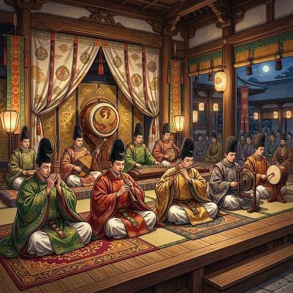

中学音楽（鑑賞曲）
鑑賞曲① (春・魔王・雅楽「越天楽」)
中学音楽の定期テストや実技試験で必ず出題される、西洋音楽の超名曲「春」と「魔王」、そして日本の古典芸能・雅楽の代表作「越天楽」の3曲を解説します。テストで高配点になる形式や用語、楽器名などを対比させながら確実に暗記しましょう！
1. ヴィヴァルディ「春」 (協奏曲「四季」より)
左：ヴィヴァルディの肖像画 ／ 右：のどかな春の風景を描いた曲のイメージ
① 基本データ
- 作曲者：ヴィヴァルディ（イタリア出身の作曲家）
- 活躍した時代：バロック時代（同時代の作曲家に、バッハやヘンデルがいます）
- 別名・通り名：ヴィヴァルディは協奏曲の発展に大きな役割を果たしたことから、「協奏曲の父」と呼ばれます。
- 曲の種類：協奏曲（コンチェルト）（独奏楽器とオーケストラが掛け合いをしながら演奏する曲）
- 独奏楽器：ヴァイオリン（ヴィヴァルディ自身も優れたヴァイオリニストでした）
- 楽章の構成：全部で3つの楽章からできています（急-緩-急の構成）。
② 定期テストに出る特徴と楽典用語
- リトルネッロ形式 ➔ 第1楽章の形式です。「トゥッティ（全員で演奏する主題）と、ソロ（独奏ヴァイオリンによる描写的な演奏）が交互に現れる」形式のこと。
- ソネット ➔ 曲の各場面に付けられている、短い形の詩のこと。春の訪れ、鳥のさえずり、泉の湧き出る様子、雷鳴などがソネットに基づいて描写されています。
- 通奏低音（つうそうていおん） ➔ バロック音楽特有の伴奏法で、チェンバロなどが低音パートの上に数字で示された和音を加えながら即興的に伴奏する方法です。
2. シューベルト「魔王」
左：シューベルトの肖像画 ／ 右：嵐の夜を馬で駆ける親子の前に現れる魔王のイメージ
① 基本データ
- 作詞者：ゲーテ（ドイツの偉大な詩人・作家）
- 作曲者：シューベルト（オーストリアのウィーン郊外で生まれた「歌曲の王」。当時18歳という若さで作曲しました。他の代表作は「野ばら」など）
- 曲のジャンル：リート（ドイツ歌曲）（ドイツ語の詩にピアノ伴奏が付いた歌曲）
- 演奏形態：独唱（どくしょう）（1人の歌手がピアノ伴奏に乗せて歌います）
② 登場人物の歌い分け（記述対策・必出！）
1人の歌手が、声の高さや音色を変えて4人の登場人物を劇的に歌い分けます。
- 語り手（かたりて） ➔ 客観的に状況を語る。現れるのは曲の最初と最後。
- 父親（ちちおや） ➔ 熱を出し怯える息子をなだめるため、低く落ち着いた声で歌う。
- 子ども ➔ 魔王を恐れて叫び声をあげるため、高い声で不協和音を伴って歌う。
- 魔王 ➔ 子どもをあの世へ誘い出すため、甘くささやくように不気味に歌う。
3. 雅楽「越天楽（えてんらく）」

宮廷音楽として千年以上前から伝わる、世界最古の合奏音楽。
① 基本データ
- 曲の分類：雅楽の演奏形態のうち、舞を伴わない器楽合奏である「管絃（かんげん）」に分類されます（「越天楽」には舞は付いていません）。
- 雅楽の起源：日本古来の音楽に、5〜9世紀頃にアジア各地から伝来した音楽や舞が融合して成立しました。
- 舞楽（ぶがく）の分類（舞を伴う雅楽）：
- 左舞（さまい）：中国を起源とする「唐楽（とうがく）」の舞。装束は赤色系統。
- 右舞（うまい）：朝鮮半島を起源とする「高麗楽（こまがく）」の舞。装束は緑色系統。
② 雅楽の主要楽器（テスト漢字表記必須！）
- 笙（しょう） ➔ 17本の竹管からなる管楽器。吹いても吸っても音が出る。和音を演奏し、「天から差し込む光」を表す。
- 篳篥（ひちりき） ➔ リードを用いる竹製の縦笛。独特の豊かな音色で主旋律を演奏し、「地上の人々の声」を表す。
- 鞨鼓（かっこ） ➔ 2本のばちで左右の革面を叩く打楽器。全体のテンポをリードする指揮者の役割を持つ。
- 箏（がくそう） ➔ 13本の弦を右手の爪で弾く弦楽器。拍の区切りを示す。
🔥 定期テスト対策・暗記のコツ
① リトルネッロ形式の記述説明
「春」の第1楽章で用いられる『リトルネッロ形式』とはどのような形式か、と問われたら、「合奏（トゥッティ）と独奏（ソロ）が交互にくり返される形式」と正しく答えられるようにまとめておきましょう！
② 「魔王」の登場人物と歌い分け
1人で4役を歌い分けるのが特徴です。「語り手・父・子・魔王」の4人を漢字で正確に抜き出せるようにしてください。また、客観的に状況を述べる「語り手」が現れるのは、曲の最初と最後だけである点もよく出題されます。
③ 雅楽の楽器の漢字と役割（最難関！）
雅楽の楽器名は漢字が非常に難しいため、手書きでの減点が続出します。「笙（しょう） ➔ 和音」「篳篥（ひちりき） ➔ 主旋律」「鞨鼓（かっこ） ➔ テンポをリードする」の3つは、何度も紙に書いて正確に綴れるようにしておきましょう！